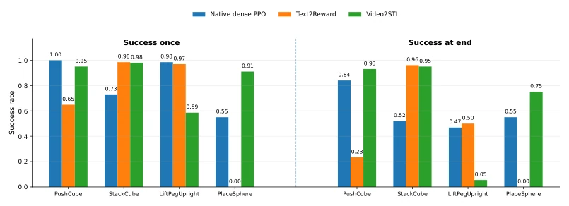

This paper equips video learning robots with a "logic translator". The core lies in converting video semantics perceived by the VLM into STL formulas, then filling parameters with ground truth. The advantage is clear structure; unlike Text2Reward which writes code directly and is prone to chaos, it allows explicit visibility of task temporal sequences. However, there are drawbacks: if the VLM misorders events, subsequent data filling cannot recover it, as it is probabilistically generated; moreover, although sign-preserving smoothing is mathematically rigorous, will it make the reward surface too smooth during actual training, leading to local optima? Nevertheless, given the quadruped robot's 100% success rate across all speed ranges, this logic is indeed much more stable than purely text-generated rewards, at least capable of explaining why the robot falls, which is superior to black-box rewards.
研究动机Motivation
强化学习奖励设计是个黑盒，尤其是跨形态迁移时，像素或动作对应不上。现有方法如 Text2Reward (Xie et al., 2024) 直接生成代码，VIP (Ma et al., 2023) 用视觉嵌入，但都难以显式表达任务的时间结构。比如“先拿再放”这种时序，标量奖励很难拆解，导致策略难以复用。Video2STL 想解决的是：视频决定符号结构，机器人数据决定数值参数。这样既利用了视频演示的丰富性，又保留了 STL 的可解释性和形式化验证能力，避免 VLM 瞎编具体的距离或速度阈值，实现从人类视频到机器人控制的可解释迁移，解决跨形态语义鸿沟问题。
Reinforcement learning reward design is a black box, especially during cross-embodiment transfer where pixels or actions fail to correspond. Existing methods such as Text2Reward (Xie et al., 2024) generate code directly, and VIP (Ma et al., 2023) utilizes visual embeddings, yet both struggle to explicitly express the temporal structure of tasks. For instance, temporal sequences like "pick then place" are difficult to decompose using scalar rewards, leading to strategies that are hard to reuse. Video2STL aims to resolve this: video determines symbolic structure, while robot data determines numerical parameters. This approach leverages the richness of video demonstrations while retaining STL's interpretability and formal verification capabilities, avoiding VLMs from hallucinating specific distance or speed thresholds, achieving interpretable transfer from human video to robot control, and solving the cross-embodiment semantic gap problem.
The overall process is divided into three steps. First, the VLM parses the video to generate embodiment-agnostic semantic event traces (Semantic Event Trace), such as "grasp" or "approach", based on a predefined ontology. Next, the VLM converts these events into a parameterized STL formula library, retaining only symbolic parameters (e.g., $H_{task}$) at this stage without filling specific values, ensuring the universality of the symbolic structure. Then, successful robot trajectories are used to Grounding the formulas, fitting thresholds and time bounds via quantile fitting, while another portion of trajectories is used for Filtering (Filtering) to remove formulas inconsistent with expert behavior, ensuring logical consistency. Finally, the reward function is designed with a dual time-scale: short-term uses sliding window STL robustness to provide dense rewards, and long-term uses a causal monitor (Causal Monitor) to provide stage completion rewards. Notably, they employed Sign-Preserving Smooth to handle STL's min/max operations, ensuring logical boundaries remain unchanged while optimizing more smoothly, avoiding the issue of traditional smoothing altering signs.

Figure 2: Manipulation results on ManiSkill3 tasks. We compare the native dense PPO reward, Text2Reward, and Video2STL on PushCube, StackCube, LiftPegUpright, and PlaceSphere.
Tested on the Barkour quadruped robot and ManiSkill3 manipulation tasks. Baselines include native PPO reward, Text2Reward, and heuristic rewards. Metrics include success rate (Success) and cost of transport (CoT). The results are notable: the quadruped robot maintains 100% success across the full speed range of 0.3-2.1 m/s, proving more stable than Text2Reward and heuristics at high speeds, with superior CoT. In manipulation, Video2STL significantly outperforms Text2Reward on tasks such as PlaceSphere (67.0% vs 42.3% success-at-end). It is found that the logic structure generated by the VLM is indeed more conducive to long temporal tasks than pure text generation; however, for tasks like LiftPegUpright that require high precision in release timing, loose grounding thresholds lead to failure, indicating that parameter fitting is highly sensitive to details.